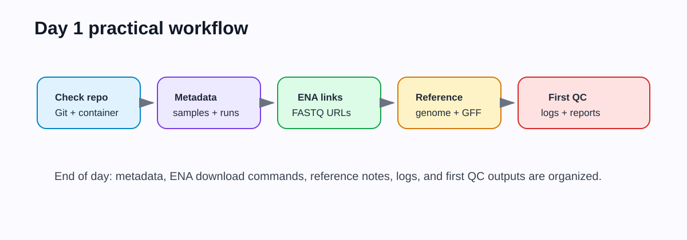
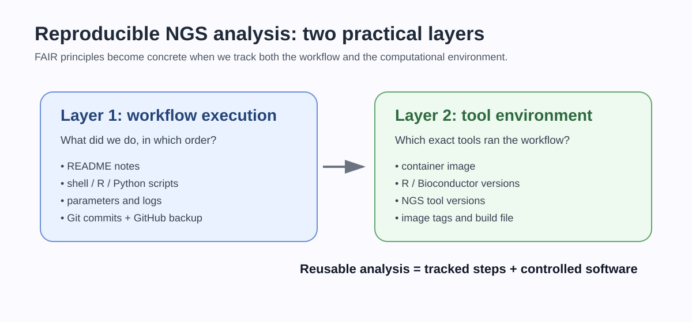
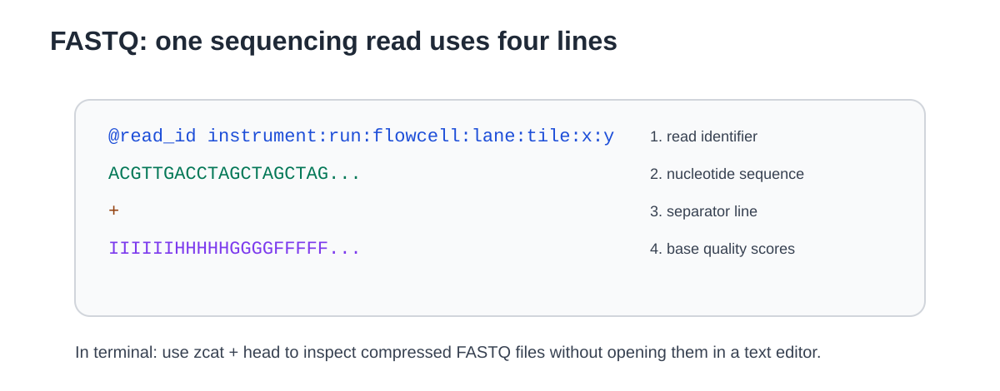

Day 1 - Reproducible project, public data, and reference files
From public accessions to a metadata-driven NGS project
Overview
Day 1 connects reproducible project structure with public sequencing resources. Students create the core metadata files, learn how public sequencing records are organized, retrieve or inspect FASTQ links, and prepare the reference genome and annotation used by RNA-seq and ChIP-seq workflows.

The practical route for this workshop uses ENA direct FASTQ links for the selected small RNA-seq and ChIP-seq datasets. We will still explain how GEO and SRA identifiers relate to ENA records, but students will not use SRA Toolkit as the main download route. The logic is: metadata first, data download second, analysis third.
Today’s path: how your repository grows
Day 0 repository
-> code/day1/README.md
-> code/day1/metadata/samples_rnaseq.tsv
-> code/day1/metadata/samples_chipseq.tsv
-> code/day1/get_ena_metadata.sh
-> code/day1/download_fastqs_from_table.sh
-> code/day1/reference/REFERENCE.md
-> data/raw_fastq/ locally, if downloading
-> first QC output and logs
-> commit and pushLearning outcomes
By the end of Day 1, students should be able to:
- organize a small NGS project with clear folders and
.gitignorerules; - distinguish public-data records such as study, sample, experiment, and run;
- create sample metadata tables that drive the analysis;
- retrieve public sequencing files using documented commands;
- explain the structure and quality information of FASTQ files;
- obtain or record the reference genome and annotation used for mapping and counting;
- commit scripts, metadata, and notes without committing large sequencing files.
Time plan
| Time | Activity |
|---|---|
| 00:00-00:25 | Setup check, repository status, and execution route |
| 00:25-01:00 | Reproducibility stack, folder structure, and .gitignore |
| 01:00-01:45 | Public repositories: GEO, SRA, ENA, ArrayExpress and metadata |
| 01:45-02:00 | Break |
| 02:00-02:45 | FASTQ files, accessions, and selected-run tables |
| 02:45-03:25 | Reference genome, annotation, and genome indexes |
| 03:25-03:50 | First lightweight QC or checkpoint inspection |
| 03:50-04:00 | Commit and push Day 1 material |
Conceptual background
Public sequencing resources
Public sequencing archives separate the biological study from the physical samples and sequencing runs. The terminology differs slightly across repositories, but the structure is usually hierarchical:
study / project
-> biological samples
-> sequencing experiments or libraries
-> sequencing runs
-> FASTQ filesFor reproducible analysis, the run accession is often the practical unit used to download FASTQ files, while the sample metadata defines the biological design. A sample table should therefore connect biological variables to technical accessions.
Common fields include:
| Field | Meaning |
|---|---|
sample_id |
Short name used in the workshop |
assay |
RNA-seq or ChIP-seq |
condition |
Biological condition or treatment |
replicate |
Biological replicate number |
factor |
ChIP target, for example a TF or RNAP-associated factor |
control |
Input or negative control, when relevant |
run_accession |
SRA/ENA run identifier |
layout |
Single-end or paired-end |
fastq_url |
Direct download link, when using ENA |
From accessions to analysis design
The run accession tells us which FASTQ file to download. It does not, by itself, define the biological comparison. The statistical design comes from the metadata columns that describe condition, replicate, assay and control relationships.
For example, two technical FASTQ files may belong to the same biological sample, while two biological replicates should represent independent biological material. Treating technical runs as biological replicates would make the downstream statistics look stronger than the experiment really is. The sample table is therefore part of the analysis model, not just a download list.
FAIR as a practical workflow
In this course, FAIR is not an abstract slogan. It becomes concrete through an evidence trail:
metadata table -> script or command -> log -> output -> README interpretation -> Git commitIf a result cannot be traced back through this chain, it is difficult to check, debug or reuse.

FASTQ structure and base qualities
A FASTQ record contains four lines:
@read_identifier
ACGTACGTACGT...
+
IIIIIIIIIIII...The sequence line stores base calls. The quality line stores one character per base. Each character encodes a Phred quality score:
\[ Q = -10 \log_{10}(P_{\mathrm{error}}) \]
where \(P_{\mathrm{error}}\) is the estimated probability that the base call is wrong. Rearranging:
\[ P_{\mathrm{error}} = 10^{-Q/10} \]
For example, \(Q=30\) corresponds to an estimated error probability of \(10^{-3}\), or approximately 1 error per 1000 bases.

What the tools are doing
| Tool or file type | Bioinformatics role | Main concept |
|---|---|---|
| GEO/SRA/ENA/ArrayExpress | Public archives | Recover data provenance and accession metadata |
| GEO identifiers | Study/sample records | Often describe the experiment and point to run accessions |
| ENA FASTQ links | Direct download | Avoids conversion by downloading submitted FASTQ files |
wget/curl |
File transfer | Makes download commands explicit and repeatable |
| FASTQ | Raw read data | Sequence plus per-base quality |
| FASTA | Reference sequence | Genome or transcript sequences without annotation |
| GFF/GTF | Annotation | Genomic coordinates of genes, CDS, transcripts or other features |
| Bowtie2/BWA index | Search data structure | Allows fast alignment of reads to a genome |
Genome indexing is a computational shortcut. Rather than comparing every read to every genome position naively, aligners build an index that lets them find candidate mapping positions quickly. Different aligners use different indexing strategies, but the teaching point is the same: the reference genome must be indexed before efficient mapping is possible.
Reference genome and annotation consistency
RNA-seq and ChIP-seq integration requires the same coordinate system throughout the project. The genome FASTA, annotation file, BAM files, bigWig tracks, and peak files must agree on chromosome or contig names and coordinate conventions.
For example, these names must not be mixed without conversion:
NC_000915.1
chr1
chromosome
H_pylori_26695Coordinate consistency is more important than tool choice. If the annotation refers to one contig name and the BAM files use another, counting and peak annotation can silently fail or produce empty overlaps.
1. Check your repository
Open your student repository in VS Code and run:
git status
pwd
lsYou should see the files created on Day 0.
Create the Day 1 folders:
mkdir -p code/day1
mkdir -p code/day1/metadata
mkdir -p code/day1/reference
mkdir -p data/genome
mkdir -p data/raw_fastq/rnaseq
mkdir -p data/raw_fastq/chipseq
mkdir -p results/logs/day1
mkdir -p results/day1/qcOpen README.md in VS Code and add:
## Day 1 objective
Day 1 documents public data accessions, sample metadata, reference genome files, and the first QC step.2. Confirm what will be versioned
Open .gitignore in VS Code and add these rules if they are not already present:
# Raw and intermediate NGS data
data/raw_fastq/
data/trimmed_fastq/
data/bam/
*.fastq
*.fq
*.fastq.gz
*.fq.gz
*.sra
*.sam
*.bam
*.bai
*.bw
*.bigWig
# Generated temporary files
results/tmp/
*.tmpCommit metadata and scripts, not raw FASTQ/BAM/bigWig files.
3. Create a study metadata note
Create code/day1/README.md in VS Code and paste:
# Day 1 - public data and project setup
This folder contains notes, accession tables and scripts used to retrieve or inspect public sequencing data.
## Dataset
- Organism: to be defined by instructor
- RNA-seq design: to be defined by instructor
- ChIP-seq design: to be defined by instructor
- Reference genome: to be defined by instructor
- Annotation source: to be defined by instructor
## Execution route
- Local Docker/Podman / university workstation / checkpoint route: to be recorded4. Create sample metadata tables
Create code/day1/metadata/samples_rnaseq.tsv in VS Code and paste:
sample_id assay condition replicate run_accession layout fastq_url
WT_RNA_1 RNAseq WT 1 RUN_TO_DEFINE SE URL_TO_DEFINE
WT_RNA_2 RNAseq WT 2 RUN_TO_DEFINE SE URL_TO_DEFINE
KO_RNA_1 RNAseq KO 1 RUN_TO_DEFINE SE URL_TO_DEFINE
KO_RNA_2 RNAseq KO 2 RUN_TO_DEFINE SE URL_TO_DEFINECreate code/day1/metadata/samples_chipseq.tsv in VS Code and paste:
sample_id assay factor condition replicate is_control control_sample run_accession layout fastq_url
TF_IP_1 ChIPseq TF condition_A 1 no Input_1 RUN_TO_DEFINE SE URL_TO_DEFINE
TF_IP_2 ChIPseq TF condition_A 2 no Input_1 RUN_TO_DEFINE SE URL_TO_DEFINE
Input_1 ChIPseq Input condition_A 1 yes NA RUN_TO_DEFINE SE URL_TO_DEFINEThe exact rows will be edited after the instructor presents the selected dataset.
5. Retrieve metadata from ENA
ENA direct FASTQ route
ENA metadata can be queried to obtain run tables and direct FASTQ URLs. For the workshop teaching datasets, use ENA/ArrayExpress accessions:
RNA-seq: E-MTAB-13025
ChIP-seq: E-MTAB-13026Create code/day1/get_ena_metadata.sh in VS Code and paste:
#!/usr/bin/env bash
set -euo pipefail
OUTDIR="code/day1/metadata"
mkdir -p "${OUTDIR}"
FIELDS="run_accession,sample_accession,experiment_accession,library_layout,fastq_ftp,submitted_ftp,read_count,base_count"
for accession in E-MTAB-13025 E-MTAB-13026; do
curl -L \
"https://www.ebi.ac.uk/ena/portal/api/filereport?accession=${accession}&result=read_run&fields=${FIELDS}&format=tsv" \
-o "${OUTDIR}/${accession}_ena_runs.tsv"
doneMake the script executable and run it:
chmod +x code/day1/get_ena_metadata.sh
bash code/day1/get_ena_metadata.sh 2>&1 | tee results/logs/day1/01_get_ena_metadata.logMany papers and GEO records describe datasets through GEO or SRA identifiers. We use those identifiers to understand provenance, but the practical download table for this workshop comes from ENA because it provides direct FASTQ links.
6. Download selected FASTQ files
Create code/day1/download_fastqs_from_table.sh in VS Code and paste:
#!/usr/bin/env bash
set -euo pipefail
TABLE=${1:?"Usage: bash download_fastqs_from_table.sh metadata.tsv output_dir"}
OUTDIR=${2:?"Usage: bash download_fastqs_from_table.sh metadata.tsv output_dir"}
mkdir -p "${OUTDIR}" results/logs/day1
# Required columns: sample_id, run_accession, layout, fastq_url.
# For paired-end data, fastq_url values may contain two URLs separated by semicolons.
printf "sample_id\trun_accession\tfastq_url\n" > results/logs/day1/download_manifest.tsv
awk -F'\t' '
NR == 1 {
for (i = 1; i <= NF; i++) col[$i] = i
split("sample_id run_accession layout fastq_url", req, " ")
for (i in req) {
if (!(req[i] in col)) {
print "Missing required column: " req[i] > "/dev/stderr"
exit 1
}
}
next
}
{
print $(col["sample_id"]) "\t" $(col["run_accession"]) "\t" $(col["layout"]) "\t" $(col["fastq_url"])
}
' "${TABLE}" | while IFS=$'\t' read -r sample_id run_accession layout fastq_url; do
if [[ -z "${fastq_url}" || "${fastq_url}" == "NA" || "${fastq_url}" == "URL_TO_DEFINE" ]]; then
echo "Skipping ${sample_id}: fastq_url is not defined"
continue
fi
echo "Downloading ${sample_id} from ${fastq_url}"
echo "${sample_id}\t${run_accession}\t${fastq_url}" >> results/logs/day1/download_manifest.tsv
IFS=';' read -ra URLS <<< "${fastq_url}"
i=1
for url in "${URLS[@]}"; do
clean_url="https://${url#ftp://}"
if [[ "${layout}" == "PAIRED" || "${layout}" == "PE" ]]; then
outfile="${OUTDIR}/${sample_id}_R${i}.fastq.gz"
else
outfile="${OUTDIR}/${sample_id}.fastq.gz"
fi
curl -L "${clean_url}" -o "${outfile}"
i=$((i+1))
done
doneMake it executable:
chmod +x code/day1/download_fastqs_from_table.shUse only after the instructor confirms the selected subset:
bash code/day1/download_fastqs_from_table.sh \
code/day1/metadata/samples_rnaseq.tsv \
data/raw_fastq/rnaseq7. Inspect FASTQ files
List files:
ls -lh data/raw_fastq/rnaseqInspect the first record without decompressing to disk:
zcat data/raw_fastq/rnaseq/WT_RNA_1.fastq.gz | head -n 4Count lines and estimate reads:
zcat data/raw_fastq/rnaseq/WT_RNA_1.fastq.gz | wc -lNumber of reads is approximately:
\[ N_{\mathrm{reads}} = \frac{N_{\mathrm{lines}}}{4} \]
8. Reference genome and annotation
Create code/day1/reference/REFERENCE.md in VS Code and paste:
# Reference genome and annotation
- Organism: to be defined
- Genome FASTA source: to be defined
- Annotation source: to be defined
- Genome accession/version: to be defined
- Annotation version/date: to be defined
- Contig naming checked: yes/noWhen files are provided or downloaded, keep them under:
data/genome/genome.fa
data/genome/annotation.gff3Do not rename contigs manually unless the conversion is documented.
9. Optional first QC
If the selected FASTQ files are available, run a lightweight QC tool such as FastQC, Falco, or another course-provided command. The purpose is not yet to interpret every plot, but to confirm that the files are readable and that the first analysis output can be generated.
Example placeholder:
mkdir -p results/day1/qc
fastqc data/raw_fastq/rnaseq/WT_RNA_1.fastq.gz -o results/day1/qc10. End-of-day commit
Add only small text files, scripts, and metadata:
git status
git add README.md .gitignore code/day1
git commit -m "Add Day 1 metadata and public data retrieval notes"
git pushDo not add FASTQ files.
Self-check questions
- Which column in your sample table links a biological sample to a public sequencing run?
- Why is the reference genome version part of the analysis record?
- What information is lost if FASTQ files are downloaded manually without recording URLs or accessions?
- Why should FASTQ, BAM, and bigWig files usually be excluded from Git?
- What is the difference between a FASTA genome file and a GFF/GTF annotation file?
Day 1 checkpoint
By the end of Day 1, your repository should contain:
code/day1/README.md
code/day1/metadata/samples_rnaseq.tsv
code/day1/metadata/samples_chipseq.tsv
code/day1/get_ena_metadata.sh
code/day1/download_fastqs_from_table.sh
code/day1/reference/REFERENCE.md
README.md
.gitignoreYour repository should also state which execution route you will attempt on Day 2.
How to report issues
If you have a GitHub account, report Day 1 problems by opening an Issue in your student repository.
Include:
Day 1and the step number in the issue title;- your operating system;
- the command you ran;
- the exact error message;
- the relevant log file, for example
results/logs/day1/01_get_ena_metadata.log.
If you cannot create or access a GitHub account, email:
francesco.gualdrini@gmail.comUse email only for GitHub account/access problems. Use GitHub Issues for workshop technical questions whenever possible.